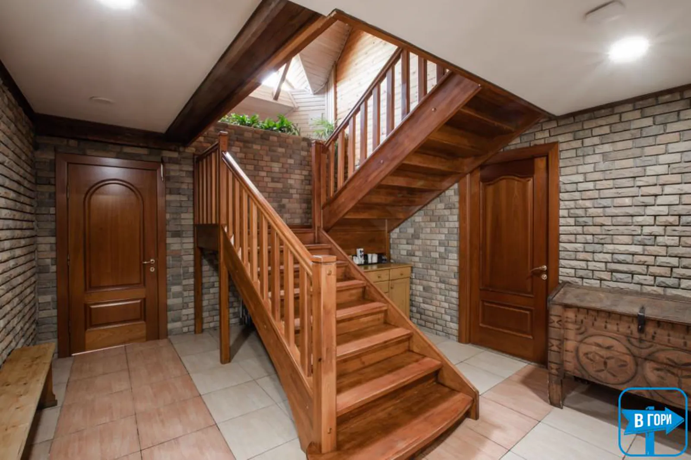

для великої родиниТриповерховий будинок
Камінний зал і їдальня на першому поверсі, читальня та дитячий куточок на другому, балкони з видом на смереки — на третьому.
- камінний зал
- 6 окремих номерів
- санвузли на поверхах
від 14 000 ₴/ нічулітку та взимку — від 16 000 ₴
обрати